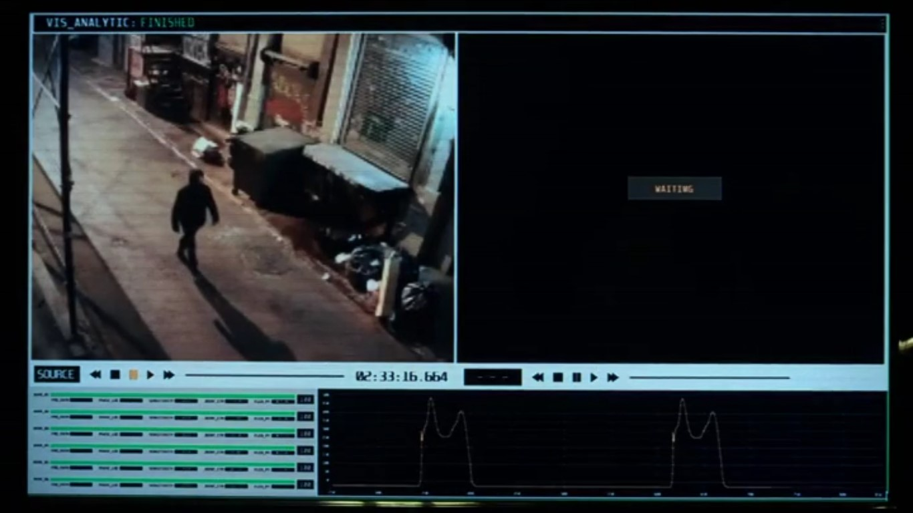
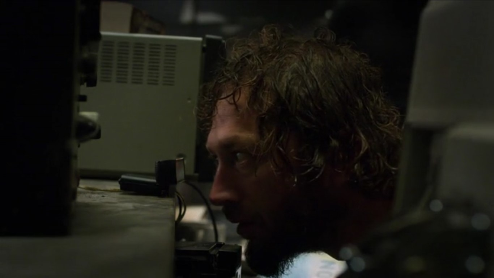
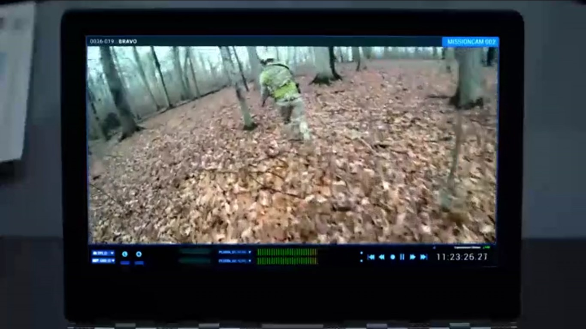
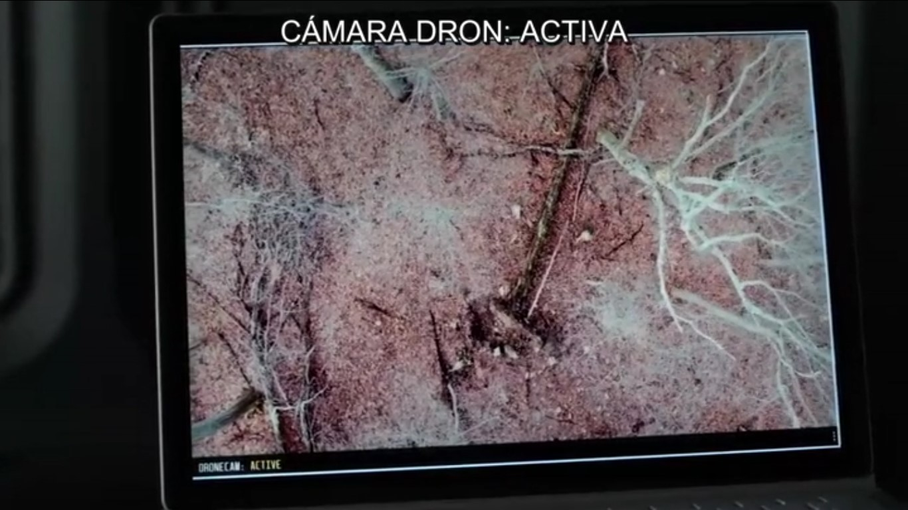
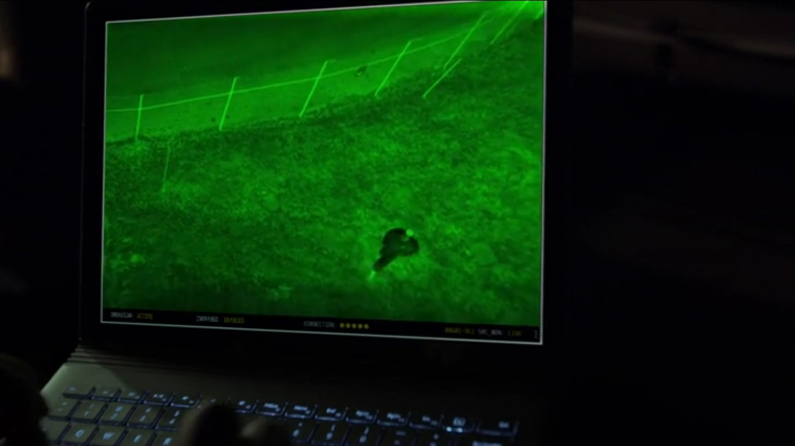

Marvel's The Punisher
Marvel's The Punisher(2017)
Sinopsis
Frank Castle, conocido por las calles de Nueva York como 'el Castigador', busca venganza contra los responsables de la muerte de su familia y, por el camino, destapa una conspiración que va mucho más allá de su vendetta personal. Spin-off de la serie "Daredevil".
Necesidades
La serie ambientada en Nueva York(EE.UU.) nos presenta una sociedad donde los organismos encargados de la seguridad del país han sido corrompidos, saltándose sistemáticamente la ley para evitar ser descubiertos por los protagonistas.
Dispositivo (Interfaz/tecnología):
Tecnología de reconocimiento de paso.
Primera Aparición:
Capitulo 1:
0:49:00
Necesidad:
David Lieberman utiliza esta tecnología para reconocer a Frank Castle y confirmar que este está vivo.La utiliza después de que Frank haya eliminado una mafia callejera y funciona gracias a que Lieberman tiene acceso a las cámaras de seguridad.
Dispositivo (Interfaz/tecnología):
Escaner de retina
Primera Aparición:
Capítulo 3:
0:05:00
Necesidad:
Lieberman tiene este Sistema como una medida de seguridad de tal forma que si no mete un codigo y no se hace un escaner de retina, toda la información comprometida de la que dispone se hará pública.
Dispositivo (Interfaz/tecnología):
Cámara con retransmisión instantánea
Primera Aparición:
Capítulo 5:
0:39:00
Necesidad:
Rawlins utiliza estas camaras para hacer un seguimiento en tiempo real de como se desarrolla la operacion de eliminación de Gunner.Cada soldado lleva una de estas camaras,que le permite ver lo que ellos estan viendo.
Dispositivo (Interfaz/tecnología):
Dron con cámara
Primera Aparición:
Capitulo 5:
0:41:57
Necesidad:
Lieberman crontrola este dron para ayudar a Castle y a Gunner a sobrevivir al ataque de los soldados de Rawlins.
Dispositivo (Interfaz/tecnología):
Dron con cámara de vision nocturna
Primera Aparición:
Capitulo 7:
0:21:21
Necesidad:
Al igual que el anterior gadget,este dron es utilizado para que Lieberman pueda guiar a Castle en su intento por matar a Rawlins.
Tecnologías involucradas
Actualmente todas las tecnologías mencionadas existen y están, en mayor o menor medida, siendo aplicadas y mejoradas en distintos ámbitos. La más relativamente nueva es la técnica biométrica de reconocimiento de personas por su forma de andar.
Tecnologías disponibles en el momento de la producción
En la serie Podemos ver varios elementos tecnológicos bastante extendidos en nuestro dia a dia,como lo son ordenadores,camaras,moviles,micrófonos o drones.
Tecnologías imaginadas en el momento de la producción
El software de biometría[2][3] que se presenta en la serie es más avanzado del que se tiene en la actualidad,siendo este capaz de reconocer personas a traves de camaras de seguridad y basandose en parámetros como la frecuencia de paso.Hoy en dia esta técnica aún no está extendida y está mas recluida a un ambito de investigacion y mejora.
Impacto
En la fecha de lanzamiento de la serie ya existían varios artículos y grupos de investigación centrados en desarrollar la técnica biométrica conocida como el reconocimiento de sujetos por su forma de andar, quizás haya servido para dar a conocer mas este método y de alguna forma impulsar su desarrollo con fines de seguridad.
Referencias
- IMDB, Marvel’s The Punisher, http://www.imdb.com/title/tt5675620/episodes?ref_=tt_ov_epl , (última visita: 09 marzo de 2018)
- Wikipedia, Biometría, https://es.wikipedia.org/wiki/Biometr%C3%ADa, (última visita: 11 marzo de 2018)
- El Mundo, ”Investigan la identificación de personas por la forma de andar y el movimiento de los labios”, http://www.elmundo.es/elmundo/2011/02/26/valencia/1298721279.html, (última visita: 11 marzo de 2018)